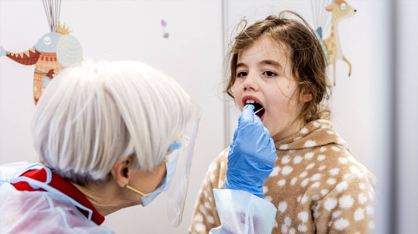
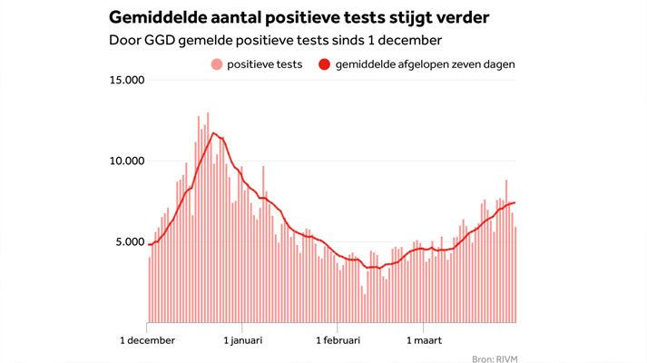
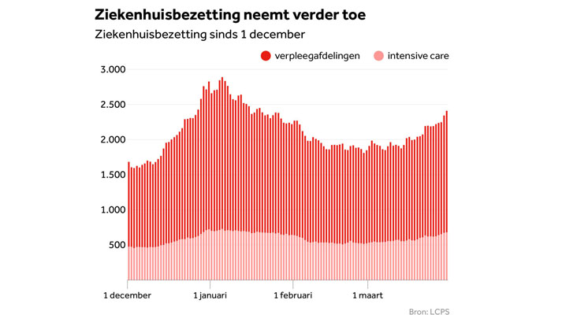
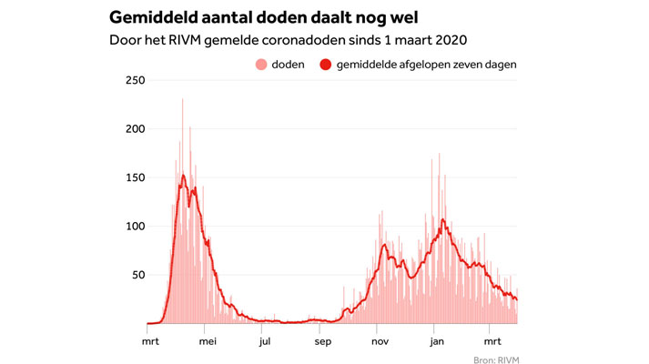

RIVM: alle coronacijfers in het rood; sterke stijging bij zeventigers
Op deze testlocatie in Amsterdam worden kinderen getest met een flexibeler wattenstaafje waardoor de test minder pijnlijk is
Net als een week eerder stijgen ook deze week alle relevante coronacijfers. Het aantal besmettingen nam met 13 procent toe tot 51.586. Weliswaar lieten opnieuw tienduizenden mensen meer zich testen, maar het percentage positieve testen ging ook omhoog: van 8,1 naar 8,5 procent.
Het is de zevende week op rij dat de situatie verslechtert. We moeten terug naar begin januari voor een vergelijkbare situatie, toen er 54.000 besmettingen waren.
Een en ander blijkt uit de weekrapportage van het RIVM, die ook laat zien dat de situatie in bijna alle regio's verslechtert. Het meest in Zuid-Holland-Zuid (onder meer Dordrecht), Limburg-Noord, Rotterdam-Rijnmond, Noord-Holland-Noord, Zaanstreek-Waterland en Brabant-Zuidoost (onder meer Eindhoven).
Sterke stijging bij zeventigers
Ook in alle leeftijdsgroepen constateert het RIVM een stijging van het aantal besmettingen. In de leeftijdsgroep 18 tot 24 is het aantal meldingen per hoofd van de bevolking nog altijd het hoogst. Dat is ook de groep waarin de grootste relatieve stijging te zien is, samen met de groep 70 tot en met 79 jaar.
In die laatste categorie is het vaccineren weliswaar begonnen, maar nog lang niet afgerond. In de verpleeghuizen is dat wel gebeurd en daar neemt het aantal positieve testen juist af. Het ministerie schat dat er nu 2,4 miljoen prikken zijn gezet.
Aura Timen, hoofd infectiebestrijding van het RIVM, maakt zich over die ontwikkeling bij de zeventigers op korte termijn het meest zorgen:
Besmettingen stijgen verder: 'zorgen over toename bij 70-plussers'
Er werden afgelopen week 1578 mensen met covid opgenomen in het ziekenhuis, 65 meer dan de week ervoor. En 317 op de IC, ongeveer evenveel als de zeven voorafgaande weken.
Het reproductiegetal was op 15 maart 1,07. Dat betekent dat 100 besmette mensen 107 andere mensen infecteren. Weliswaar is dat een kleine daling ten opzichte van de 1,11 van de week daarvoor, maar het wijst er wel op dat de epidemie zich nog altijd uitbreidt. Volgens Timen ziet het er niet naar uit dat de Zuid-Afrikaanse en Braziliaanse varianten echt voet aan de grond krijgen in Nederland; de Britse variant blijft dominant. Die is wel een stuk besmettelijker dan de oorspronkelijke versie.
Het afgelopen etmaal werden bij het RIVM 5909 nieuwe bevestigde coronabesmettingen gemeld. Dat zijn er 895 minder dan gisteren.
Gemiddeld aantal besmettingen stijgt verder
Er liggen nu 2410 mensen met corona in het ziekenhuis (gisteren: 2342), van wie 682 op de IC (gisteren: 675), meldt het Landelijk Coördinatiecentrum Patiënten Spreiding (LCPS). Het aantal ziekenhuispatiënten is het hoogst sinds 19 januari.
Ziekenhuisbezetting neemt verder toe
Bij het RIVM werden tot 10.00 uur vanmorgen 36 overleden covid-patiënten gemeld. Gisteren waren dat er nog 10. De afgelopen zeven dagen registreerde het RIVM gemiddeld 24 doden per dag, tegen 32 doden per dag een week eerder.
Gemiddeld aantal doden daalt nog wel